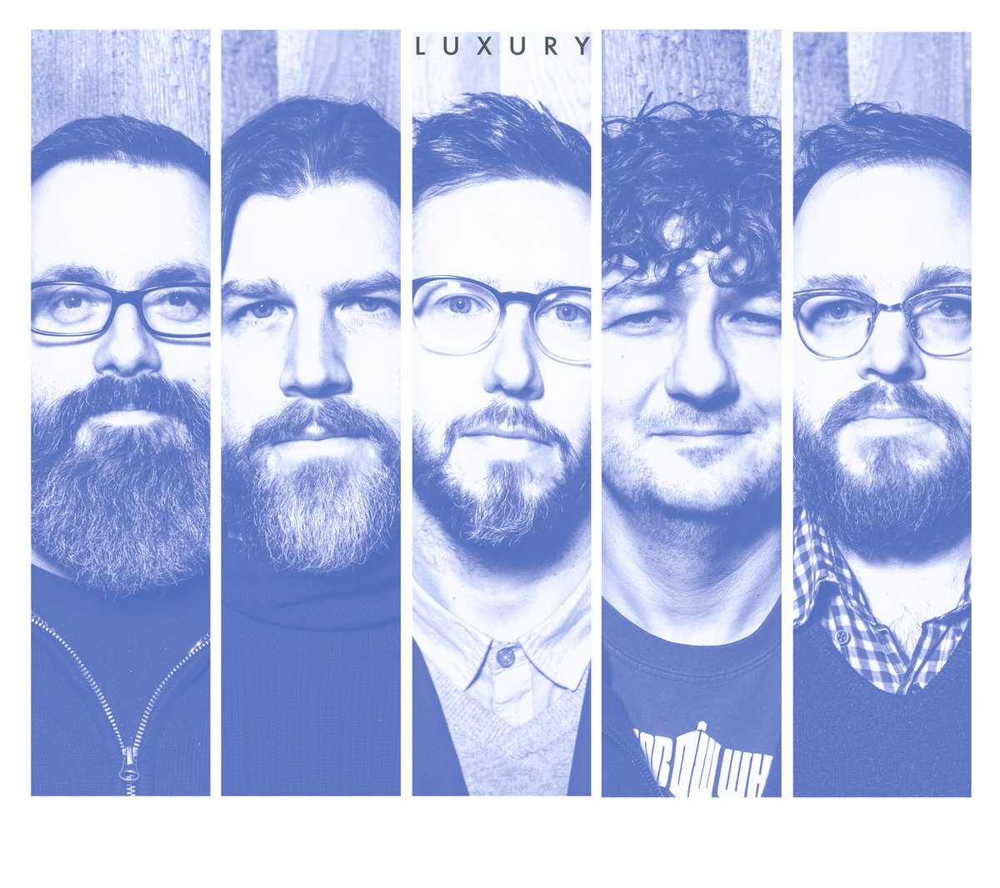

BIO
BIO

 Romanian cunt, I like music and conspiracy theories. I like talking about philosophical shit and history, especially the history of Romania. one day I will become the Emperor of the Romanian Hyperborean Empire and will take over the world, but first I must regain Romania's borders from 1919. Other than that I'm pretty much your average Joe, I am also an Orthodox Christian. Something I must mention is that I have a deep hatred for the 21st century Western secularism that has brought a plague of ignorance and historical revisionism onto the world. God is real, Jesus Christ is lord, and He will return, denying 2000 years of theology and even more of philosophy is simply not permissable.
Romanian cunt, I like music and conspiracy theories. I like talking about philosophical shit and history, especially the history of Romania. one day I will become the Emperor of the Romanian Hyperborean Empire and will take over the world, but first I must regain Romania's borders from 1919. Other than that I'm pretty much your average Joe, I am also an Orthodox Christian. Something I must mention is that I have a deep hatred for the 21st century Western secularism that has brought a plague of ignorance and historical revisionism onto the world. God is real, Jesus Christ is lord, and He will return, denying 2000 years of theology and even more of philosophy is simply not permissable.
JESUS CHRIST IS LORD. AMEN.
 |
“Then the righteous will answer him, ‘Lord, when did we see you hungry and feed you, or thirsty and give you something to drink? When did we see you a stranger and invite you in, or needing clothes and clothe you? When did we see you sick or in prison and go to visit you?’ “The King will reply, ‘Truly I tell you, whatever you did for one of the least of these brothers and sisters of mine, you did for me.’" |
 |

 HOBBIES
HOBBIES


 Favourite Media
Favourite Media
  |
My favourite bands have to be Luxury ☦, RED HOT CHILI PEPPERS and Other than that I mainly listen to all kinds of rock and metal, Aerosmith, The Beatles, Metallica and some other shit. I also love Romanian orchestral music and traditional music, world renowned George Enescu for example, everyone must listen to the Romanian Rhapsody at least once in their life, it's truly beautifull. |
 |
|  |